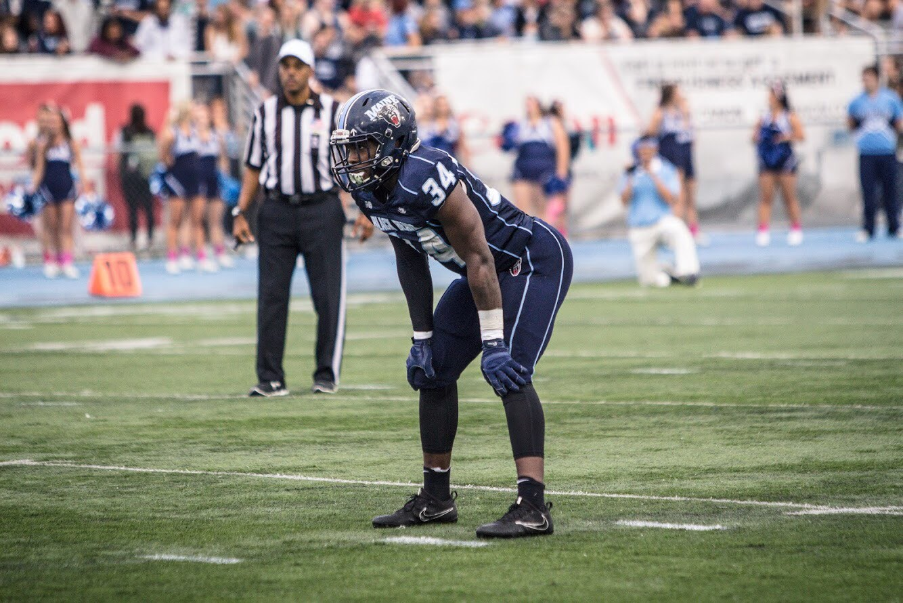
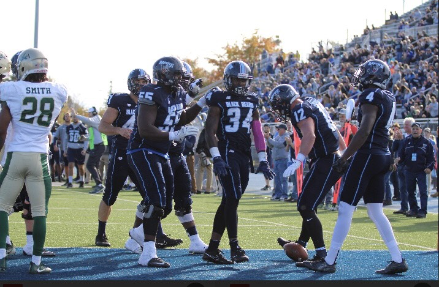

| Home | Hometown | Family | Sports | Fashion |
|---|
I always wanted to follow in my brother footsteps which is what drew me towards football. I started playing flag football at five years old. I've had a lot of success over the years playing this sport. This past year I lead the nation in rushing yards (1,335), I led the nation in rushing yards per game (131.5), and I was fourth in all purpose yards a game (161.4) nationlly.
|  |  |